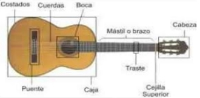
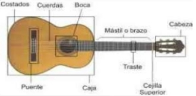

GUITARRA
Composición
Es también conocida como guitarra clásica o guitarra española. Es un instrumento de cuerda pulsada compuesto de una caja amplificadora o de resonancia, un mastil que contiene un diapasón que a su vez lleva un agujero en el medio de su boca y tenzadas tiene 6 cuerdas finas. sobre el diapasón estan incrustados los trastes que son tiras finas de metal.
Una gran variedad de maderas se pueden emplear para fabricar este instrumento de cuerda, entre ellos están el abeto, la caoba, el palisandro de la India, el cedro de Canadá, el pino y el ciprés.
 

Origen
Existen distintas versiones acerca de cual puede ser el origen de la guitarra criolla. Una de ellas es la hipotesis de que tiene un origen grecolatino y se cree que es descendiente de la fidicula. El fundamento para sostener esta hipotesis radica en su raiz etimológica. Se cree que los griegos deformaron el nombre de los primeros cordófonos, llamandolos kithára o kettarah. De esta forma se puede ver la similitud con la palabra "guitarra". Otra hipotesis es que podria tener un origen árabe ya que etimológicamente hablando se lo denomina qitarah y además este instrumento pudo haber sido introducido por los conquistadores árabes.
Algunos instrumentos similares a la guitarra eran conocidas en la India en idioma sanscrito como sitar, vocablo que daría origen a la palabra española guitarra.
Tipos de guitarra
Guitarra acústica
Es una variante de guitarra que está hecha de alambre y nylon, y teambvien puede estar hecho de metal. Al igual que la guitarra criolla el sonido se produce cuando se vibran las cuerdas, pero en el caso de la guitarra acústica el sonido se amplifica en la caja acústica de madera o de algún acrílico. Fue creada por C. F. Martin y Orville Gibson, luthieres estadounidenses. estas clases de guitarras son también son conocidas como western guitars (guitarras del oeste).

Guitarra de flamenco
Es otra variante de la guitarra criolla, y se diferencia por su forma y el material con el cual está hecho. Tiene un sonido más percusivo, su caja es más estrecha y las cuerdas están cerca del diapasón, lo que facilita su ejecución.
Tiene menos sonoridad y ofrece menos volumen pero su sonido es mas brillante, su ejecución es más fácil y rapida, debido a la menor distacia de las cuerdas del diapasón, lo que permite hacer menos presion con los dedos de la mano izquierda sobre el diapasón. Siempre las clavijas de afinación estaban hechas de palo y se embutían en la pala de la guitarra de forma perpendicular a ella, pero hoy en dia se fabrican clavijeros de mecanica moderna, pero que imitan a los antiguos. Abajo de la roseta suele llevar un guardapúas para evitar que los rasgueos y golpes que se dan en la tapa armónica, afecten la madera.
Guitarra electrica
Al igual que las anteriores guitarras posee 6 cuerdas, pero con la diferencia que al ser electrica, la vibracion producida por el rasguido se convierten en señales electricas. estas señales electricas son debiles, y por eso se amplifica mediante un altavoz y puede ser alterada por circuitos electronicos para modificar su sonido. Estos circuitos electronicos usualmente son la reverberación y la distorsión. Esta guitarra fue creada en 1915 con la idea de amplificar el sonido del jazz. una de las caracteristicas de esta guitarra es la multiplicidad de sonidos que posee y es un instrumento fundamental en el rock and roll.
Fue creada por Leo Fender en la primera mitad del siglo xx y mas tarde fue comercializada a nivel mundial. A partir de ese momento muchs instrumentos sufrieron alteraciones en su diseño acústico e incorporaron un sistema electrico. Los primeros en adoptarla fueron los guitarristas de opereta y jazz.
Leo Fender fue el primero en crear la guitarra electrica con mastil desmontable y pocas piezas para que los interpretes no tengan problemas al momento de cambiar las piezas rotas o gastadas.